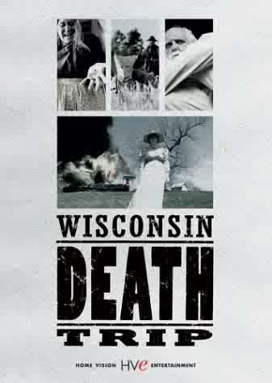

Wisconsin Death Trip
Directed by James Marsh
Starring Ian Holm, Jo Vukelich

More than any other film I've encountered, Wisconsin Death Trip captures what it is that's so utterly fascinating about the dark, weird side of historical research. Any researcher can read about Ulysses S. Grant's campaigns in the Civil War, but it takes a certain frame of mind to cull the suicides, murders, arsons, calamities, and cases of insanity from two decades' worth of late-nineteenth century newspaper reports in one small town and compile them into a book. This film is based on that book, a doctoral thesis by history student Michael Lesy which quickly gained a cult following. What the movie lacks in narrative structure it makes up for in the utter weirdness of its bizarre, often terrifying vignettes. (Particularly hard to contemplate is the woman whose body was disinterred and discovered to have been clawing at the inside lid of her coffin.) Someone should do a similar project on any specific region of the country during this period--a time when newspapers reported not that a local man committed suicide by drinking carbolic acid, but also why he did it (usually "unrequited love" or something equally heartbreaking). Most definitely worth a purchase, if you're interested in the kinds of things Forgotten Ohio is all about.